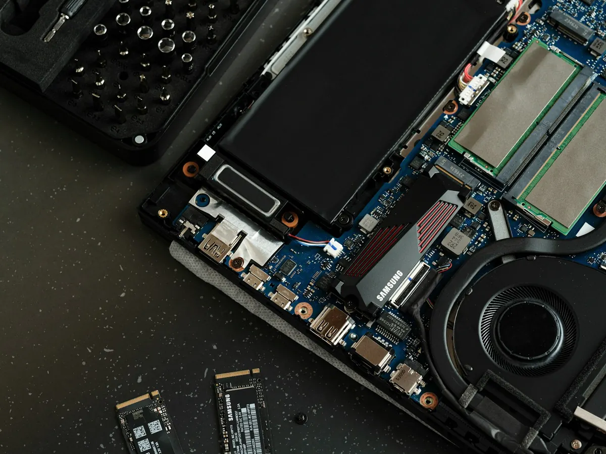
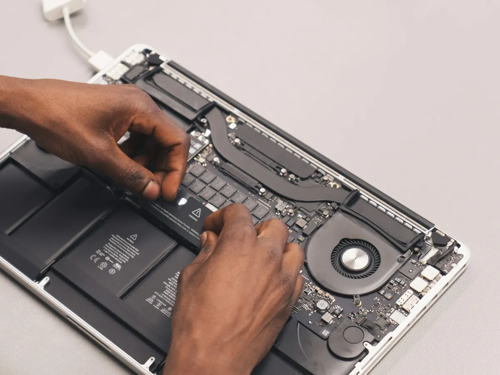

Ordinateur lent ou qui plante ? Dépannage à domicile et à distance
Démarrage interminable, ventilateur qui s'emballe, écran bleu ou logiciels qui se figent : un ordinateur lent n'est pas forcément bon à jeter. Nous trouvons la cause et, le plus souvent, lui redonnons de la vitesse sans avoir à le remplacer.
Les signes qui doivent vous alerter
Chaque symptôme a ses causes probables. Le diagnostic permet de corriger la bonne, sans dépenser inutilement.
Démarrage très long
Plusieurs minutes avant de pouvoir travailler : souvent trop de programmes lancés au démarrage, ou un disque dur mécanique fatigué.
Plantages et écrans bleus
Redémarrages surprises, écran bleu sous Windows, roue multicolore sur Mac : pilote défaillant, mise à jour ratée ou composant en fin de vie.
Ventilateur bruyant, ordinateur brûlant
La poussière bouche les aérations, le processeur chauffe et ralentit pour se protéger. Un dépoussiérage suffit parfois.
Navigateur lent et publicités
Pages qui s'ouvrent seules, barre d'outils inconnue : la lenteur vient parfois d'un logiciel indésirable. Voir notre page virus et arnaques.
Disque plein
Message « espace insuffisant », mises à jour qui échouent : nous faisons de la place sans toucher à vos photos ni à vos documents.
Ordinateur de plus de 5 ans
Un PC ou un Mac de 5 à 8 ans peut souvent repartir pour plusieurs années avec un SSD et un peu de mémoire en plus.

Le passage au SSD, le coup de jeune le plus efficace
Sur un ordinateur équipé d'un disque dur mécanique, le remplacer par un SSD est souvent la mise à niveau la plus efficace : démarrage en quelques secondes, logiciels qui s'ouvrent aussitôt, ordinateur plus silencieux.
Nous vérifions d'abord que votre modèle s'y prête, puis nous transférons votre système, vos logiciels et vos fichiers à l'identique. Si besoin, nous ajoutons de la mémoire vive dans la foulée.
- Démarrage et ouverture des logiciels nettement plus rapides
- Vos fichiers, logiciels et réglages conservés
- Toujours avec votre accord, après explication

Réparer ou remplacer son ordinateur ?
Avant d'acheter un ordinateur neuf, faites le calcul. Sur un appareil de moins de 8 ans en bon état, un passage au SSD avec un système remis au propre est souvent plus raisonnable qu'un ordinateur neuf, et change complètement l'utilisation au quotidien.
En revanche, si l'écran ou la carte mère sont endommagés, ou si l'ordinateur ne peut plus recevoir les mises à jour de sécurité, le remplacement est souvent plus raisonnable. Depuis octobre 2025, Windows 10 ne reçoit plus de mises à jour de sécurité gratuites : nous vérifions si votre PC peut passer à Windows 11.
Si un nouvel appareil s'impose, nous vous conseillons pour l'achat, en toute indépendance, et transférons vos fichiers, vos e-mails et vos favoris.
Demander conseilNotre méthode pour accélérer votre ordinateur
Nous expliquons chaque étape et ne remplaçons une pièce qu'avec votre accord.
-
Diagnostic
Nous vérifions l'état du disque, la mémoire, la température et les programmes qui tournent en arrière-plan. Vous savez précisément d'où vient la lenteur.
-
Nettoyage et optimisation
Suppression des logiciels inutiles ou indésirables, tri des programmes au démarrage, mises à jour du système et des pilotes, dépoussiérage si nécessaire.
-
Vérification avec vous
Nous testons ensemble, vous donnons les bons réflexes et, si l'ordinateur ne vaut plus la peine d'être réparé, nous vous le disons franchement.
À essayer avant de nous appeler
- Redémarrez vraiment l'ordinateur (menu Démarrer › Redémarrer), au lieu de simplement fermer le capot
- Laissez les mises à jour en attente se terminer
- Vérifiez qu'il reste au moins 15 à 20 % d'espace libre sur le disque
- Fermez les onglets et logiciels que vous n'utilisez pas
À distance ou à domicile ?
Un problème de lenteur se règle souvent en télé-assistance. Le remplacement d'une pièce (SSD, mémoire) se fait à domicile, après vous avoir expliqué ce qui est utile.
- Télé-assistance : idéale pour les problèmes logiciels, sans attente ni déplacement
- Intervention à domicile : pour le matériel, les installations, ou si vous préférez un technicien à vos côtés
- Partout à Nice et dans les Alpes-Maritimes, sur rendez-vous
Ordinateur lent : vos questions
Un SSD peut-il vraiment accélérer un vieil ordinateur ?
Oui, c'est souvent la mise à niveau la plus efficace sur un ordinateur équipé d'un disque dur classique : le démarrage et l'ouverture des logiciels deviennent nettement plus rapides. Nous vérifions d'abord que votre modèle s'y prête.
Vais-je perdre mes fichiers ?
Non. Nous sauvegardons vos documents et photos avant toute opération importante, et le système est transféré à l'identique sur le nouveau disque.
Le problème peut-il être réglé à distance ?
Si la lenteur vient des logiciels (programmes au démarrage, logiciels indésirables, mises à jour), oui : une télé-assistance suffit souvent. Pour remplacer une pièce ou dépoussiérer l'ordinateur, nous venons chez vous.
Mon PC est encore sous Windows 10, que faire ?
Windows 10 ne reçoit plus de mises à jour de sécurité gratuites depuis le 14 octobre 2025. Nous vérifions si votre ordinateur est compatible avec Windows 11 et faisons la mise à jour en conservant vos fichiers. Sinon, nous vous présentons les solutions possibles.
Dépannez-vous aussi les Mac ?
Oui, nous intervenons sur les Mac comme sur les PC Windows : nettoyage, mises à jour de macOS, vérification du disque et conseils d'utilisation.
Autres problèmes fréquents
Imprimante, nouvel ordinateur, smartphone… retrouvez tous nos services sur la page assistance aux particuliers.
Nous intervenons dans tout le 06

Votre ordinateur rame ?
Appelez-nous : nous établissons un premier diagnostic gratuit par téléphone.